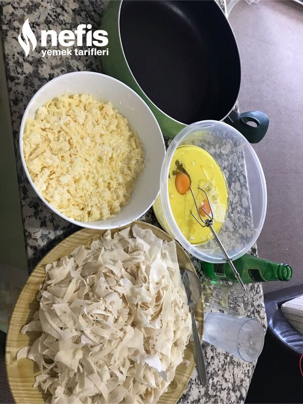

🍽️ 4-6 kişilik⏱️ Hazırlık: 10 dk🔥 Pişirme: 25 dk🏷️ Hamur İşi Tarifleri🏷️ Börek Tarifleri
Malzemeler
- 3 adet yufka
- 2 yumurta
- Yarım su bardağından biraz az sıvı yağ
- 1 ,5 su bardağı süt (su bardağı öıçüsü 200mg)
- Yarım şişe maden suyu
- İstenirse karabiber, pulbiber
- Rendelenmiş beyaz peynir, tulum peyniri karışımı
Hazırlanışı
- Önce mutfak makasıyla yufkaları 1 parmak genişliğinde şeritler halinde kesiyoruz.
- Süt, maden suyu, yumurta ve sıvı yağı karıştırıyoruz.
- İstenirse karabiber, pulbiber ekliyoruz (peynirin tuzu yeterli olacağından tuz eklemedim).
- Kestiğimiz yufkaları sütlü karışıma ekliyoruz.
- Her tarafı iyice ıslanacak şekilde karıştırıyoruz.
- Tavamızı sıvı yağ ile yağlıyoruz.
- Yufkaların yarısını yağladığımız tavaya yayıyoruz.
- Üzerine peyniri serpeliyoruz.
- Kalan yufkaları da üzerine eşit dağıtıyoruz.
- Kapağını kapatarak ocakta pişirmeye başlıyoruz.
- Alt kısmı kızarınca diğer tarafına çevirerek pişirmeye devam ediyoruz.
- Kızarınca 5 dakika dinlendirip servis ediyoruz. Pazar kahvaltıları için pratik ve nefis bir tarif.